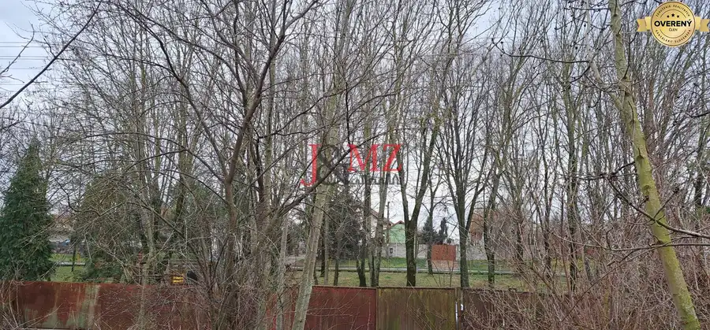
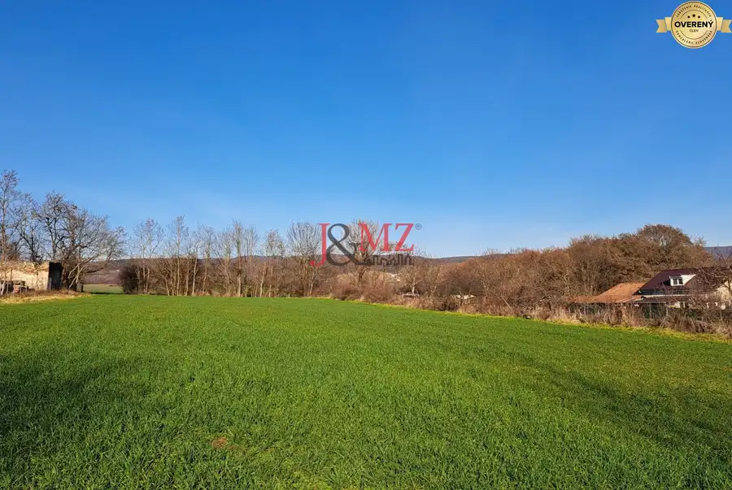
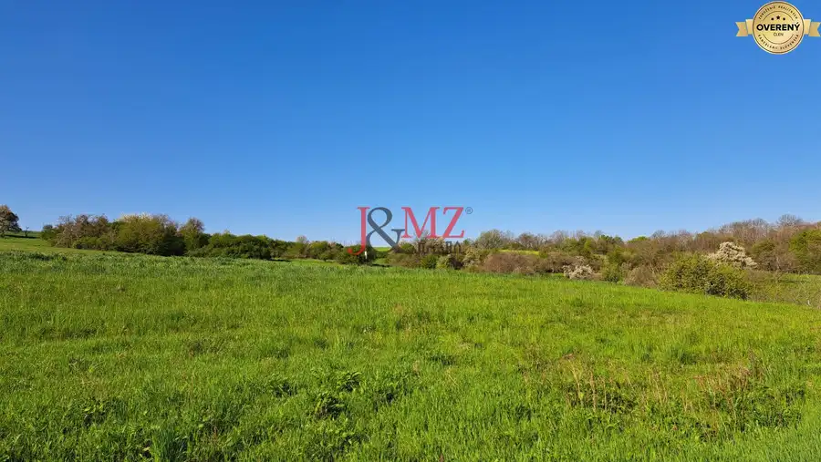

Stav. pozemok 815 m2 s budovou - garážou, Levice, Kalinčiakovo, SM-904
Levice
- Plocha815 m²
- Poschodie0.
- Stavčiastočne prerobený
- Vlastníctvoosobné
O nehnuteľnosti
J&MZ reality ponúka na predaj stavebný pozemok o výmere 815 m² s budovou - garážou v katastrálnom území Kalinčiakovo, v intraviláne obce, v blízkosti kaštieľa.
Nehnuteľnosť sa nachádza v prostredí s prírodnou scenériou a s pekným výhľadom na okolitú krajinu.
Pozemok tvorí parcela registra „C“, evidovaná ako zastavaná plocha a nádvorie o celkovej výmere 815 m2.
Na pozemku sa nachádza murovaná budova so súpisným číslom a zastavanou plochou 92 m², postavená približne pred 50 rokmi. Stavba bola pôvodne využívaná na podnikateľské účely.
K nehnuteľnosti je vypracovaný projekt - prestavba na rodinný dom.
Aktuálna dispozícia budovy:
- priestranná miestnosť o výmere 42 m² (vykurovaná plynovými gamatkami),
- nedokončené sociálne zázemie (kúpeľňa s toaletou),
- ďalšie úžitkové menšie priestory.
Strecha je pôvodná, plechová.
INŽINIERSKE SIETE: elektrina, obecný vodovod, plyn, kanalizácia + žumpa.
Pozemok je rovinatý, čiastočne oplotený, prístupný z troch strán a s príjemným výhľadom.
Možnosti využitia pre nového majiteľa:
- realizácia prestavby podľa schváleného projektu,
- výstavba nového rodinného domu s využitím existujúcej budovy (garáže/sklady),
- využitie budovy na podnikateľské účely,
- prerozdelenie na dve samostatné nehnuteľnosti (budova + stavebný pozemok),
- zbúranie pôvodnej stavby a výstavba jedného alebo dvoch nových domov.
Záujemcu o kúpu určite poteší Rýchla dostupnosť do okresného mesta Levice, tesná blízkosť kúpaliska Margita Ilona, ale hlavne zavedené všetky inžinierske siete.
Kalinčiakovo je intravilánna časť Levíc s pokojnejším tempom a príjemnou prírodnou scenériou. Umiestnením tejto nehnuteľnosti v blízkosti miestneho kaštieľa sa otvárajú výhľady na okolitú krajinu, čo podčiarkuje vhodnosť lokality na rodinné bývanie. Rovinatý charakter pozemku uľahčuje jeho využitie a napojenie na existujúce komunikácie.
Obec prirodzene nadväzuje na zázemie Levíc a zároveň si drží komornejší ráz.
Kontakt:
Maklér: Slavomíra Machová
Parametre
| Rozloha pozemku | 815 m² |
|---|---|
| Poschodie | prízemie |
| Vlastníctvo | osobné |
| Stav | čiastočne prerobený |
| Odvoz odpadu | áno - separovaný |
| Voda | verejný vodovod |
| El. napätie | 230/400V |
| Plyn | áno |
| Kanalizácia | áno |
| Inžinierske siete | áno |
| Terén | rovina |
| Prístupová cesta | asfaltová cesta |
| Dátum zverejnenia | 8. 9. 2026 |
Kde to je
Mohlo by Vás zaujímať

Pozemok6 Cena dohodouStavebný pozemok 2.720 m2, šírka 20 m, LOK, Cena DOHODOU (SM–898) Lok 2720 m² CELKOVÁ VÝMERA NEHNUTEĽNOSTI SO SKVELOU ORIENTÁCIOU JE 2.720 m2. Parcely registra „C“ sú evidované na katastrálnej mape ako druh pozemku : „záhrada“…
Pozemok7 130 890 €Stavebný pozemok 4.300 m2, Nová Dedina, Cena DOHODOU (SM–794) Nová Dedina 4363 m² J&MZ reality ponúka exkluzívne na predaj investičný stavebný pozemok o celkovej výmere 4.363 m2 v intraviláne Nová Dedina, katastrálne územie…
Pozemok8 95 000 €Pozemok 7.000 m2, šírka 55 m, Žemberovce, Cena DOHODOU (SM–867) Žemberovce 6925 m² J&MZ reality ponúka na predaj PREDNOSTNE V CELKU nadrozmerný pozemok O CELKOVEJ VÝMERE 6.925 M2 v obci Žemberovce, vo vyvýšenej lokalite s nádherným…